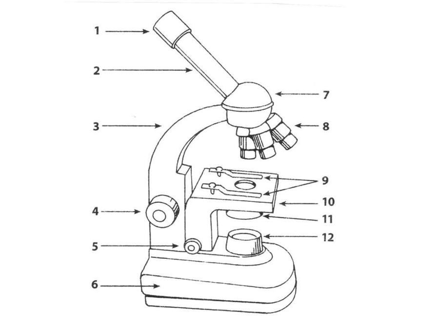

1. Выберите вариант(ы), которые не относятся к видам микроскопии:
2. Электронная микроскопия позволяет получать изображения объектов с максимальным увеличением:
3. Выберите правильное утверждение:
4. Механическая часть микроскопа состоит из:
5. Соотнесите (в ответ написать последовательность букв):
1) Требуется для грубой настройки изображения
2) Требуется для более точной настройки изображения
3) Находится под предметным столиком и состоит из конденсора, и подсветки
4) Представляет собой систему линз, собирающих параллельные лучи и концентрирующих их в плоскости препарата
5) Система линз в металлической оправе
6) Располагается в верхней части тубуса микроскопа и представляет собой систему из двух линз, дает дополнительное увеличение в 5, 7, 10 и 15 раз.
а) объектив
б) макровинт
в) осветительный аппарат
г) микровинт
д) конденсор
е) окуляр
6. Выберите верный(ые) вариант(ы):
7. Установите правильную последовательность микроскопирования:
а) Если объектом исследования является препарат «раздавленная капля» или «висячая капля», то объектив малого увеличения с помощью револьвера заменяют объективом среднего увеличения. Осторожно вращая микровинт, находят четкое изображение.
б) Устанавливают объектив малого увеличения, максимально приблизив его к предметному столику. Если микроскоп снабжен зеркалом, то, наблюдая в окуляр, направляют зеркало на источник освещения, выбирая такое его положение, при котором поле зрения микроскопа имеет форму равномерно и хорошо освещенного круга. Во многих современных микроскопах регулировать освещение не надо.
в) Если объектом является сухой мазок, то его рассматривают с помощью иммерсионного объектива. Для этого на мазок помещают каплю иммерсионного масла, с помощью револьвера объектив с малым увеличением заменяют иммерсионным объективом. Если с помощью объектива малого увеличения изображение было верно найдено, то иммерсионный объектив погрузится в каплю масла. Изображение находят, осторожно вращая макровинт. Для получения четкого изображения вращают легким движением микровинт.
г) Отрегулировав освещение, на предметный столик помещают препарат, закрепляют в препаратоводителе, и, медленно поднимая тубус с помощью макровинта, находят четкое изображение препарата.
8. Выберите правильный(ые) вариант(ы):
9. Соотнесите (в ответ написать последовательность букв):
а) конденсор
б) окуляр
в) предметный столик
г) зажимы, препаратодержатель
д) микровинт
е) тубус
ё) макровинт
ж) револьверное устройство
з) тубусодержатель
и) основание
й) объектив
к) подсветка
10. Выберите правильную формулу для нахождения числовой апертуры: